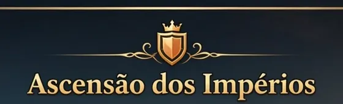

UMA CRÔNICA DE BRUMAVALE
ASCENSÃO
DOS IMPÉRIOS
Erga sua fortaleza. Reúna seus aliados. Escreva sua lenda.
ENTRAR NA CAMPANHA
➜
Seu progresso fica salvo neste navegador.
ASCENSÃO DOS IMPÉRIOS
CRÔNICAS DE BRUMAVALE
🪙
1.000
💚
1.000
💎
500
👷
1
+
● SALVO
VALE DE BRUMAVALE
Fortaleza 1
🗺️ MAPA
Toque numa construção para ver detalhes
🏗️ Construir
🐇 Exército
⚔️ Atacar
📜 Missões
← Vila
BATALHA DE CAMPANHA
Ataque
00:00
Escolha tropas e toque em um ponto de entrada.
Toque no campo para enviar uma tropa. Use “Enviar todos” para posicionar o grupo disponível de uma vez. Toque em uma magia para lançá-la.
×